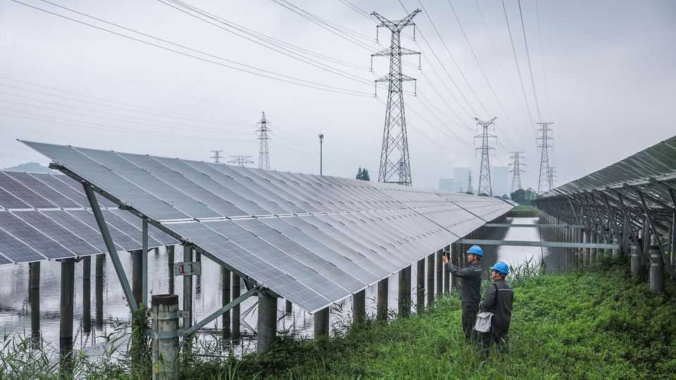
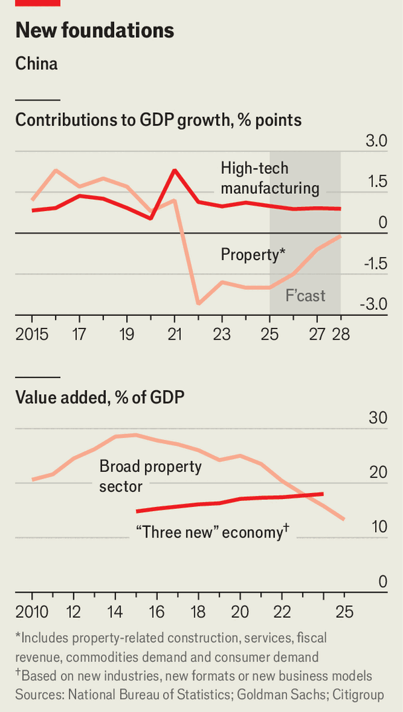

How big are China’s emerging industries?
Probably not big enough to offset the drag from the old
June 11th 2026

IN ECONOMICS, SIZE matters. Since 2021 Xi Jinping has steered China’s economy away from a preoccupation with property (building it, selling it and furnishing it) towards high-tech manufacturing and other “new productive forces”, as the paramount leader calls them. But are the new forces big enough to fill the gap left by the old?
Economists have tried to find out. Their task is not easy, thanks to ambiguities about which industries to include, how to measure their contribution and how to fill gaps in the data. One recent attempt by Rhodium Group, a consultancy, drew on a table published by China’s National Bureau of Statistics (NBS) in November detailing the links between industries in 2023. The table’s granularity makes it one of the first data sets that can shed light on “whether Beijing’s bet on new growth drivers is likely to pay off”, the authors note.

In 2023 China’s GDP was about 130trn yuan ($18trn at the time). This was split between consumer items, exports and capital goods, which are all examples of “final” goods and services, as opposed to parts, materials and other “intermediate” goods. Only 1.44trn yuan, 1.1% of the total, was spent on new-energy vehicles (NEVs), the poster child for China’s industrial success. Property-related demand (for homebuilding and real-estate services) accounted for over 16% of GDP—despite China being two years into a property crisis.
Electric-car making is, of course, not China’s only vanguard industry. People often talk of the “new three”, which also includes batteries and renewable energy. Adding these together would provide a more comprehensive measure of China’s emerging growth engines. This is where the difficulties start. Batteries, for example, are rarely a “final” good. They typically appear embedded in other products—including electric cars. Some of the 1.44trn yuan spent on NEVs, therefore, already reflects the value of the batteries inside them. Simply lumping batteries and NEVs together risks double counting.
In its measure of the new three, Rhodium Group takes care to count batteries only once. It also adds a separate measure of investment in the new industries. They are growing so fast, points out Endeavour Tian of Rhodium Group, that investment in fresh capacity can outpace current output. This investment has to be measured separately because the NBS table does not always attribute it to the three new industries. If someone builds a car or battery factory, Ms Tian notes, it is typically counted as demand for construction or machinery, not cars or batteries.
All told, Rhodium Group estimates that the new three accounted for only 3.8% of GDP in 2023. Adding the construction of new electricity infrastructure and some proxies for robotics, software and artificial-intelligence investment brings the total to 5.5% in 2023 and 6.3% in 2025.
A different attempt to measure China’s new economy was published last year by Goldman Sachs. The bank looked beyond the new three to high-tech manufacturing overall, including electronics, ship-, plane- and trainmaking, medical products and other equipment, instruments and meters. This broader set amounts to about 8% of GDP—still smaller than property. It is also less labour-intensive. The bank once calculated that 1trn yuan spent on NEVs creates 2.8m jobs, whereas the the same sum spent on residential construction generates 3.7m.
The speed of a sector’s growth matters, too. If a small industry grows twice as fast as another that is twice as big, it can make the same contribution to growth. Although high-tech manufacturing is smaller than property, it is growing fast even as property shrinks. By next year it will add more to growth than property subtracts, according to Goldman Sachs, even counting the fiscal spillovers from property’s decline and the drag on consumption when people do not buy new homes to furnish.
If high-tech manufacturing merely offsets property’s drag on growth, it will stop GDP shrinking but it will not be enough to increase it by Mr Xi’s goal of 4.5-5% a year. He has been urging entrepreneurs and local governments to think more imaginatively about new productive forces, including in old industries.
The application of new ideas in existing businesses is part of the NBS’s own definition of the “new three”—not EVs, batteries and solar panels, but “new industries, new formats and new business models”. This can span everything from drip irrigation to fire alarms. NBS calculations find these industries, formats and models already account for 18% of GDP, exceeding property’s share. “In a broad sense, the new economy now fully counterbalances property’s drag,” concludes Citigroup, another bank. If new productive forces are to meet China’s official growth goals, they must be felt beyond the industries that hog the headlines. In economics, size is not all that matters. Scope counts for something, too.■
For more expert analysis of the biggest stories in economics, finance and markets, sign up to Money Talks, our weekly subscriber-only newsletter.